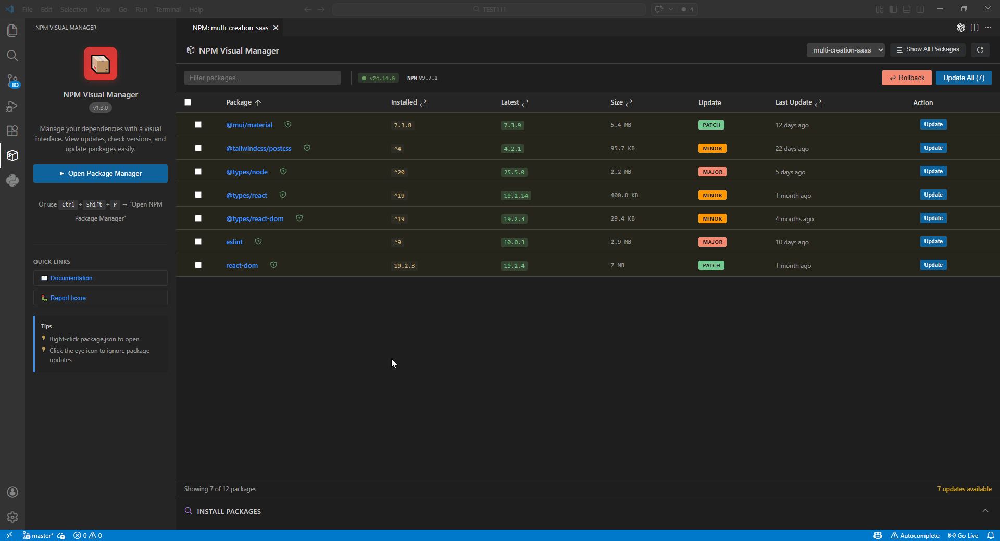

Visual Dependency Management for VS Code
Ship Cleaner Node.js Projects With Less Friction
Manage dependencies, inspect updates, run security checks, and install packages from one focused interface. Built for speed, clarity, and real project workflows.


Monorepo Ready
Audit Insights
Bulk Updates
8 Languages

Everything You Need In One Panel
Dependency Dashboard
Filter by production, development, and peer dependencies with quick version visibility.
Fast Search & Install
Search npm packages with debounced requests and install as dependency or devDependency.
Bulk Update Workflow
Update selected packages or all outdated packages with confidence and clear status feedback.
Security Insights
Run audits, inspect vulnerabilities, and identify risky packages before deployment.
Monorepo Friendly
Auto-detect projects in larger workspaces and switch context without leaving the extension.
Theme Aware UI
Designed for VS Code themes with a clean interface and focused, readable information density.
From Dependency Sprawl To Controlled Releases
Inspect
See outdated, deprecated, and vulnerable packages in one glance.
Decide
Use update type indicators and changelog links before applying changes.
Ship
Update one package or many, then continue coding without context switching.
Quick Install
- Open VS Code Extensions panel.
- Search for Node.js Package Manager.
- Install and run Open Node.js Package Manager from Command Palette.
Built In Public
This extension is open source and actively maintained. Contributions, bug reports, and feature ideas are always welcome.